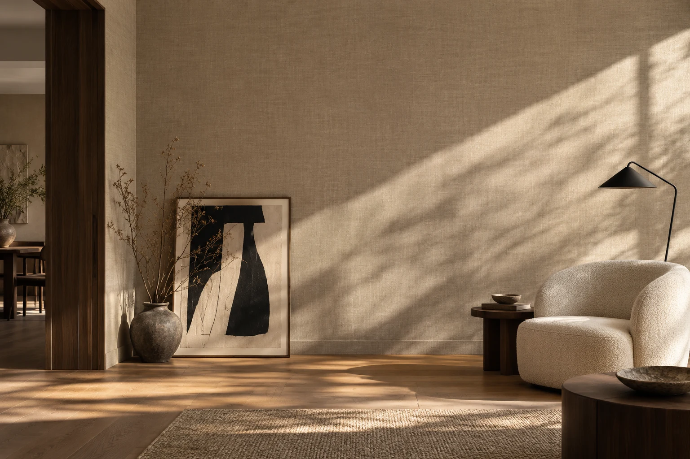

01
Поклейка
обоев
От спокойных однотонных полотен до выразительных узоров. Внимательно к рисунку, углам и стыкам.
Профессионально клеим обои и монтируем фрески.
Вы выбираете интерьер — мы заботимся о деталях.

Работаем с любыми типами обоев.
Подберём подход к вашему материалу
и обсудим все детали до начала.
От спокойных однотонных полотен до выразительных узоров. Внимательно к рисунку, углам и стыкам.
Акцентная стена с характером. Обсудим размеры, расположение и особенности выбранного полотна.
Начнём с вашего пространства. Согласуем время выезда, уточним объём и детали будущей работы.
Иногда для нового настроения
достаточно одного дня.
Расскажите о помещении, пришлите фото стен и выбранных обоев.
Согласуем бесплатный выезд, объём работ и детали вашего объекта.
Проверьте стены по чек-листу. Вопросы по подготовке обсудим заранее.
Открыть чек-лист ↗После согласования сроков и деталей приступаем к работе.
Если не нашли свой ответ,
просто напишите нам.
Да, выезд на замеры бесплатный. Свяжитесь с нами, чтобы согласовать адрес и удобное время.
Это зависит от объёма работ, выбранного материала и готовности стен. Возможность поклейки за один день обсудим для вашего помещения заранее.
Работаем с любыми типами обоев и монтируем фрески. Пришлите название материала, фото этикетки или ссылку — обсудим детали вашего объекта.
Стоимость зависит от объёма и особенностей работ. Напишите нам, приложите фото стен и выбранных обоев. Детали согласуем перед началом.
Да, обоям нужно подготовленное основание. Основные этапы собраны на отдельной странице «Подготовка стен». Если сомневаетесь в состоянии стен, обсудите это с нами до начала работ.
Да, предоставляем гарантию качества. Условия и срок гарантии уточняйте при согласовании работ.
Расскажите о помещении, пришлите фото стен или выбранных обоев. Обсудим детали и договоримся о бесплатном замере.
+7 913 757 06 09Если мессенджер не находит контакт, позвоните нам.